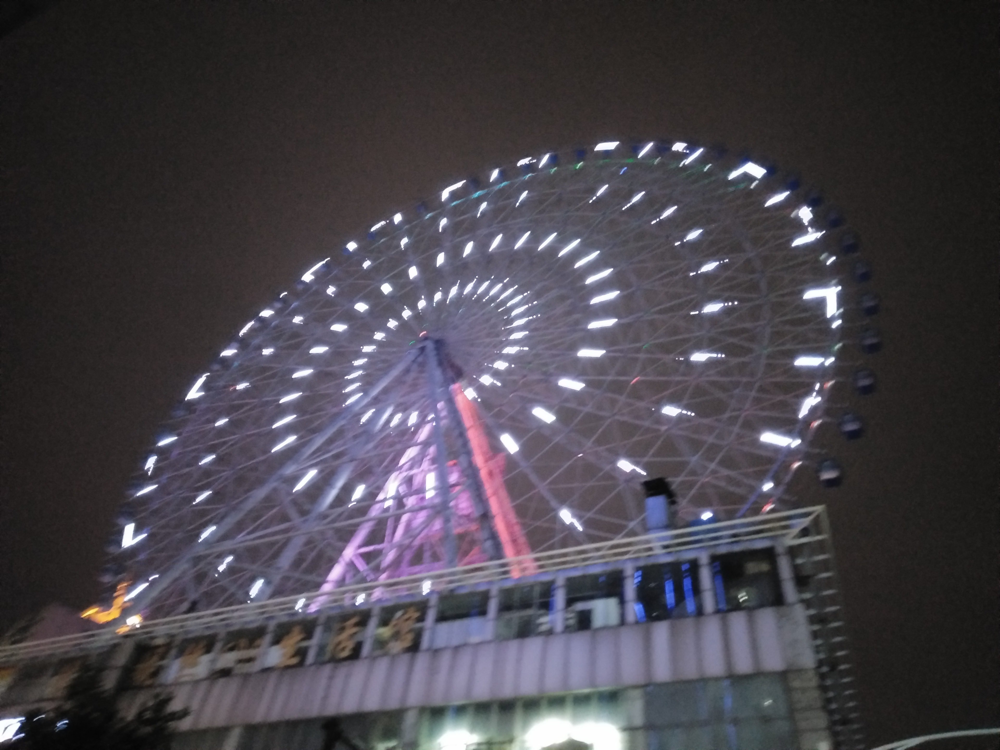

- 张琴琳
- 1992/07
- 湖南省长沙市
- 电话：17377876272
- 163942170
- 1639421708@qq.com
- qinlin992

欢迎来到张琴琳的个人主页
了解我更多>>
My name is Zhangqinlin,I come from xiangxi hunan province,and I graduated from Beijing Wuzi University...
那些消逝在时光里的记忆
北漂的生活
从北京回来已经有些时日，可最近总是梦见又回北京。在北京生活了6年，整个青春岁月都是在那边度过的，自从2011年的秋天去了北京上大学，直至17年年底才回到老家,大学毕业后，对于自己待了4年的城市，竟有些留恋，也必将看好北京的互联网环境，我成为了千千万万北漂的一员.....
学习web前端的初衷
也许很多人不理解，我为什么辞掉了工资马上上万的工作，而选择从头开始学习web前端网页开发技术，况且年龄也不小了，现在转行，真的太需要勇气，我想我也是鼓起了我最大的勇气，告别了北漂，回到了长沙这样的二线城市学习前端。的确，北京的互联网环境要比长沙好太多.....
遇见你是我此生最幸运的事
09年认识你的时候，我们正值18岁的少年，懵懂的我们面临高考，曾经我们约定要一起去考北京的学校，可是事与愿违，我们还是分开了，然后擦肩而过，一晃眼就是七八年过去了，我也倦怠了北漂，幸运的是，你仍在这里，很多东西都还没有变，那么余生，请多指教.....
web学习技巧总结
1、元素垂直居中的方法.....
1、元素垂直居中的方法.....
1、元素垂直居中的方法.....
1、元素垂直居中的方法.....
1、元素垂直居中的方法.....
那些年走过的路